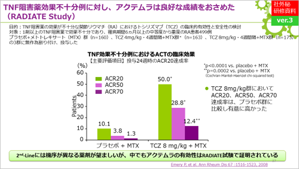
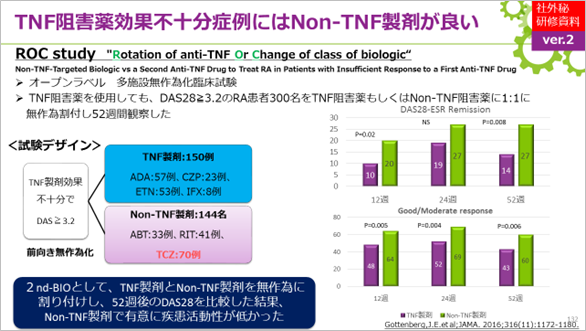

10. KEVはTNF阻害薬後の2nd lineに最適？
TARGET試験より、KEVはTNF阻害薬後の2nd lineに最適です（global戦略） 。

ACTは治験および実臨床において、2nd lineにおける多数の有用性が既に報告されています。なお、サノフィが海外学会等のシンポジウム等で使用している「ROC study」のnon-TNF製剤にKEVは含まれていません。


ACTは2nd line治療でも豊富なエビデンスを有する
TARGET試験より、KEVはTNF阻害薬後の2nd lineに最適です（global戦略） 。
ACTは治験および実臨床において、2nd lineにおける多数の有用性が既に報告されています。なお、サノフィが海外学会等のシンポジウム等で使用している「ROC study」のnon-TNF製剤にKEVは含まれていません。
ACTは2nd line治療でも豊富なエビデンスを有する